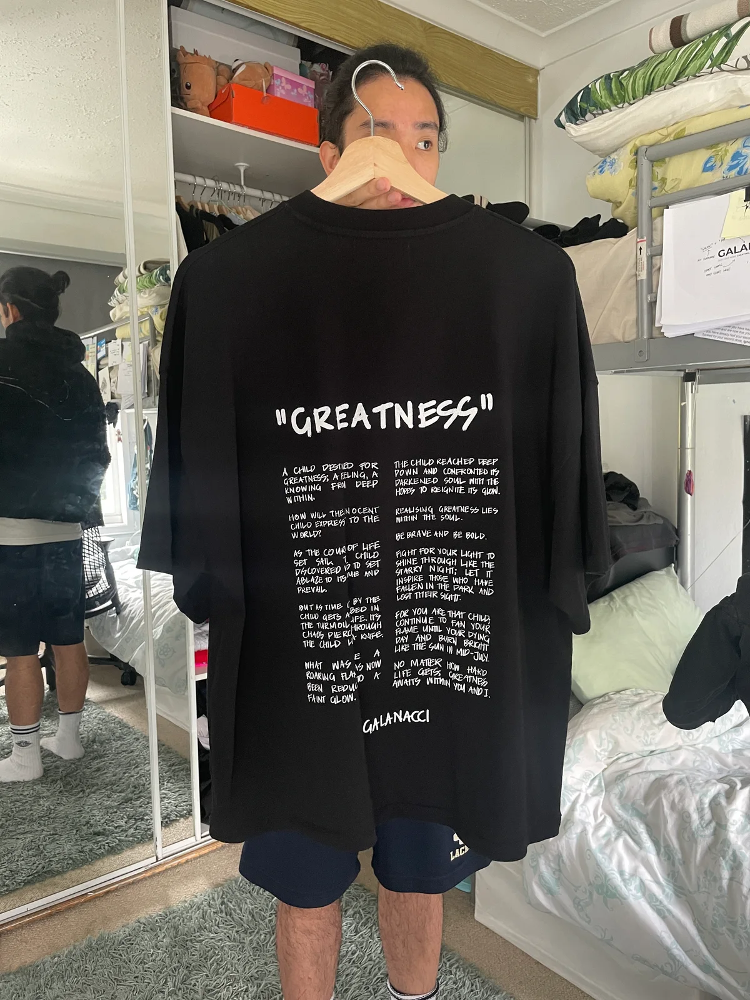
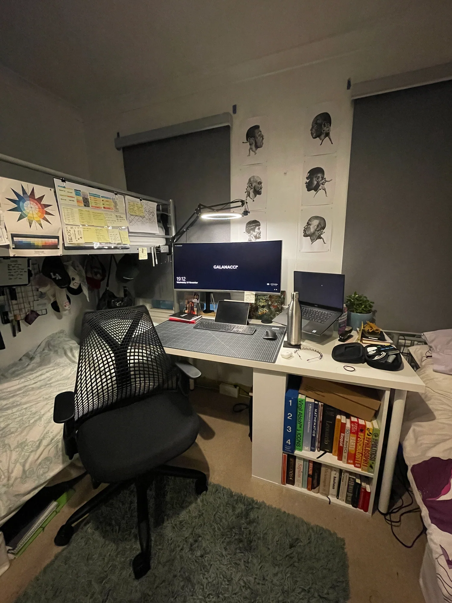

THE PERSON BEHIND THE PHILOSOPHY
The story behind PIONEERS OF GREATNESS.
01 — THE BEGINNING

A room. An idea. Whatever I had available.
PIONEERS OF GREATNESS was built from here.
02 — FOUNDER
I never set out to build another fashion brand.
PIONEERS OF GREATNESS came from a much deeper obsession — the pursuit of greatness and everything a human being has to endure along the way.
Boxing became the perfect language for that idea. Not simply the sport, but what it represents: discipline, sacrifice, resilience, solitude, courage and the willingness to keep going when things aren't going your way.
Fashion is how I chose to give those ideas physical form.
I'm building PoG while living the same philosophy it represents.
There has been no perfect timing, large investment or clear road ahead. I've had to build with whatever I have, adapt when circumstances change, and keep moving.
That's what PIONEERS OF GREATNESS is.
For those who dare to be great.
03 — THE JOURNEY
Learned to think through space, structure, proportion and ideas. But eventually realised the life I wanted to build existed somewhere else.
Left the conventional architecture path and moved towards fashion, art and independent creative work without knowing exactly where it would lead.
Began building an identity as an artist and designer. Experimenting across fashion, illustration, footwear, objects and storytelling.
Wrote the poem that would eventually become the philosophical foundation for something much bigger.
The philosophy found its physical world: boxing, humanwear and the pursuit of greatness.
PoG moved from an idea into something tangible. Patterns, prototypes, mistakes, adjustments and eventually the first completed pieces.
Someone chose to spend their own money on something that previously existed only in my mind.
Still building.
04 — THE CODE
THIS RIPPLE WILL BE A TSUNAMI.
05 — ADAPTATION
There's a Monstera growing in my bathroom.
When we moved from a bright open flat into a basement, it suddenly had almost no natural light. Over time I watched it kill off its largest leaves and replace them with smaller ones it could actually sustain.
It didn't stop being a Monstera.
It adapted to the environment it had.
That's how I've learned to build PoG.
When money is limited, build smaller. When time disappears, protect the essential. When circumstances change, change the method.
Never the destination.
06 — CURRENT MISSION
DOCUMENTARY SCREENING ROOM
UNCUT is a raw, unfiltered video journal series where I document my weekly journey as I build my fashion brand and more.
EPISODE ARCHIVE
WATCH ON YOUTUBEJOURNAL ROOM
Fragments from the making of PIONEERS OF GREATNESS.